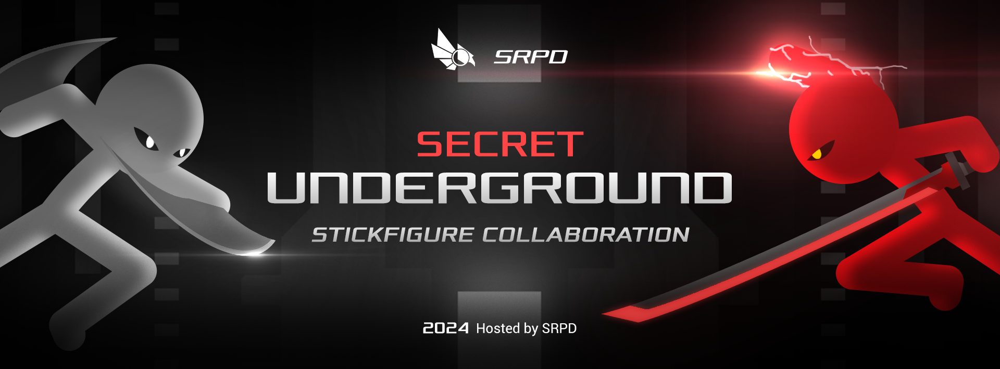
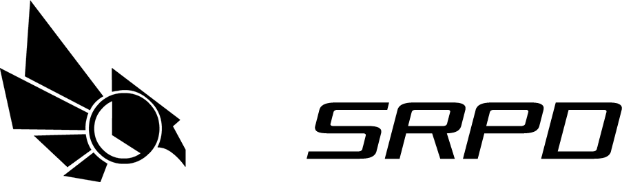

Website khusus komunitas

Mohon untuk tidak disebarkan kemana-mana pada web ini. Demi keamanan komunitas.
Secret Underground Collab
Ceritanya sickman Abu-abu berada di penjara bawah tanah paling dalam dan si Merah pemimpin penjaga mengawasi orang orang di penjara bawah tanah. Abu-abu berhasil melarikan diri berkat si temannya, Abu-abu berada di elevator menuju pintu keluar ke dataran atas lalu kemudian si Merah teleportasi ke elevatornya tersebut. Kemudian Abu-abu dan Merah mulai bertarung sambil naik keatas. Berikut cerita detailnya pas di rilis
Berikut informansi penting
Ukuran canva 1920px x 816px
Durasi minimal 9 detik
Durasi maksimal bebas
Deadline 4 bulan
Wajib 25 FPS
tidak boleh 15 fps atau dibawah 24/25 FPS
Partipasi animator hanya diterima berkualitas cukup baik.
jika anda tidak ada pada di rilis mohon maaf demi kesempurnaan konten.
Text here
Unduh Background Secret Underground Collab
UNDUH SUC-Background.zip
Apa yang harus kamu lakukan?
Kamu membuat petarungan Abu-abu melawan Merah.
Mereka mulai gelud gimana?
Abu-abu dan Merah mulainya dari tabrakan, posisi mereka ditengah yang di tanda warna kuning
(tabrakannya biasa saja jangan over power)
Kemudian mereka terpisah dengan landing biasa, Abu-abu dan Merah tidak boleh terlempar ke atas tetap terpisah horizontal kemudian landing, habis itu participants mulai beraksi animasi.
Disarankan gunakan efek percikan atau partikel tabrakan di frame paling pertama.
Mereka terakhirnya gimana?
Abu-abu dan Merah tidak boleh mati, ketika kalian selesai animasi, langsung buatkan mereka lompat ketengah seakan-akan adu kekuatan, jadi participants berikunya mulai dari tabrakan juga.
Bagian mau terakhir jangan bikin frame tabrakan cukup bikin mereka lompat ke tengah. frame tabrakan khusus di frame pertama. Jika kalian pake sound whoosh ambil tenaga yang kecil saja.
Merah dan Abu-abu punya kekuatan apa?
Text Here
Apa kode warna Merah dan Abu-abu?
Text Here